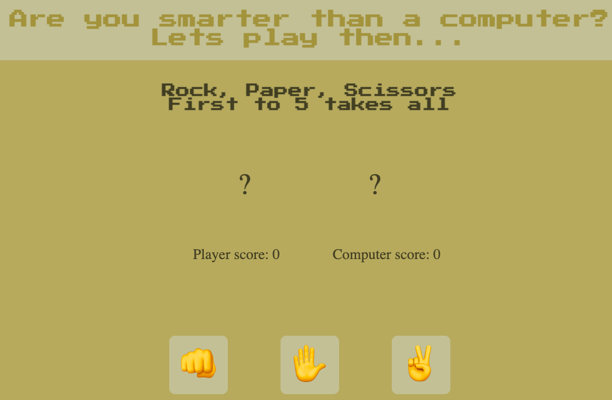

Featured Project
Below is the current project I am most proud of. It is a Rock, Paper, Scissors game made through The Odin Project curriculum.

A showcase of myself and my projects as a self taught web-dev. Taking my passion to the next level.
Below is the current project I am most proud of. It is a Rock, Paper, Scissors game made through The Odin Project curriculum.

I completed this challenge from Frontendmentor.io using HMTL, CSS, and some JavaScript. This was my first project using everything together. While presented some challenges along the way, I solved it all myself through research and trial and error. While the code isn't the prettiest it is nice to look back to see how i've come along thus far. Adobe XD also played a huge role in making sure my measurements are as accurate as possible.

This is the first landing page that I made, it is for my Real Estate Business (I was a real estate agent before realizing web development is the direction I want to go in). This project also uses HTML, CSS, and some JavaScript to create a functioning hamburger menu once in tablet/mobile mode. This was the first project I played around with media queries in. I'm currently re-working it now that I have a better understanding of CSS Flexbox, in the meantime it is responsive using media queries and not very efficiently done. Adobe XD played a big role in this as well, and aside from the color scheme (picked out by The Odin Project) everything was from my own brain, including the logo which I made myself.